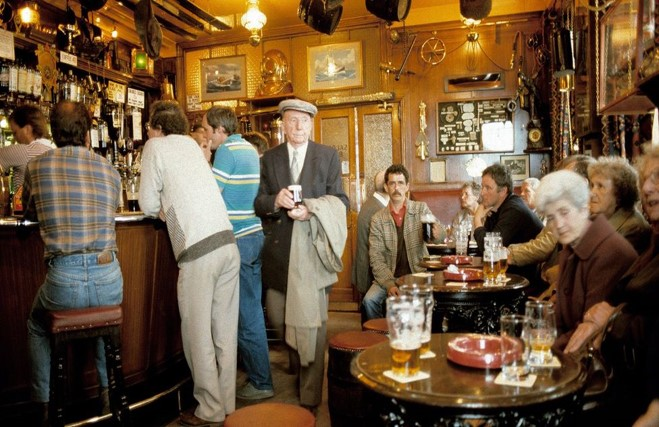
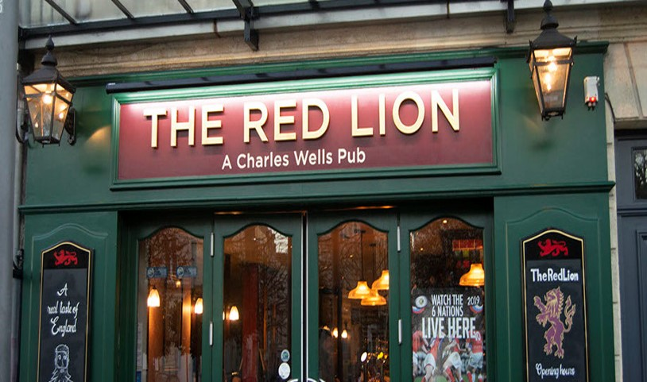
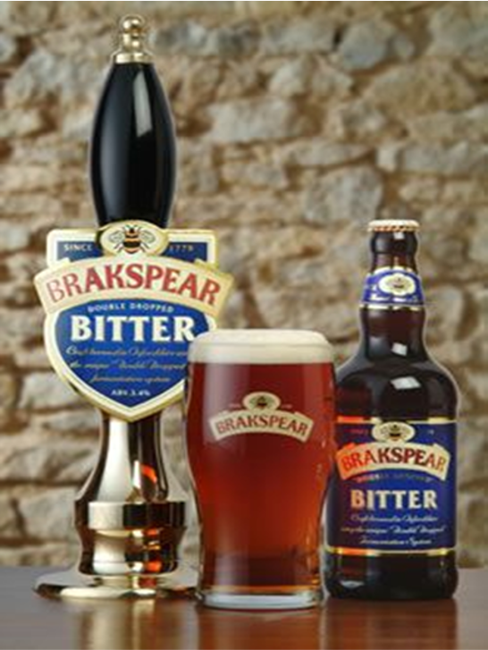
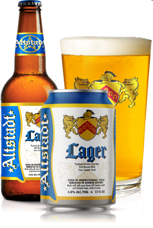
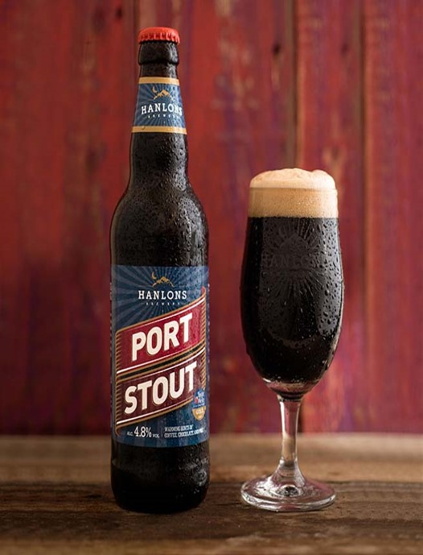

Modern pubs were originally called "taverns" and "alehouses", which were places where people could get food and drink, and "inns" which also offered accommodation for tired travelers. Alehouses, inns and taverns became known as "public houses" (abbreviated to pubs) during the reign of King Henry VII. Then, in 1552, a law was introduced that required "innkeepers" (the owners) to have a license. In 1577 there were approximately 17,000 alehouses, 2,000 inns and 400 taverns in England and Wales.
Click to know more about the history of British pubs.During the late 1930s, a group of observers set out to record what went on in British pubs. “Along the base of the bar counter, whose top is of well worn, well wiped mahogany, runs a line of scattered sawdust, about six inches wide, on to which people spit, throw fag ends, matches and empty cigarette packets.” —— The Pub and the People
One of the first Roman tavern signs was the "Bush". Early pubs hung long poles or ale stakes, which might have been used to stir the ale, outside their doors. If both wine and ale were sold, then both bush and pole would be hung outside.
When James VI of Scotland became James I of England and insisted that public buildings display the "Lion Rampant"— the Scottish royal coat of arms.
| types of drinks | introduction | |
|---|---|---|
| Bitters | A bitters (plural also bitters) is traditionally an alcoholic preparation flavored with botanical matter so that the end result is characterized by a bitter, or bittersweet flavor. Numerous longstanding brands of bitters were originally developed as patent medicines, but now are sold as digestifs, sometimes with herbal properties, and cocktail flavorings. Since cocktails often contain sour and sweet flavors, bitters are used to engage another primary taste and thereby balance out the drink and make it more complex, giving it a more complete flavor profile. | |
| Lager | Lager is beer which has been brewed and conditioned at low temperature. Lagers can be pale, amber, or dark. Pale lager is the most widely consumed and commercially available style of beer. The term "lager" comes from the German for "storage", as the beer was stored before drinking - traditionally in cool caves. | |
| Stout | Stout is a dark, top-fermented beer with a number of variations, including dry stout, oatmeal stout, milk stout, and imperial stout. The first known use of the word stout for beer was in a document dated 1677 found in the Egerton Manuscripts, the sense being that a "stout beer" was a strong beer, not a dark beer. The stronger beers, typically 7% or 8% alcohol by volume (ABV), were called "stout porters", so the history and development of stout and porter are intertwined, and the term stout has become firmly associated with dark beer, rather than just strong beer. | |
| Guinness | Guinness's flavour derives from malted barley and roasted unmalted barley, a relatively modern development, not becoming part of the grist until the mid-20th century. Although Guinness's palate still features a characteristic "tang", the company has refused to confirm whether this type of blending still occurs. The draught beer's thick, creamy head comes from mixing the beer with nitrogen and carbon dioxide. | |
There are usually several taps behind the bar that serve beer from barrels stored in the cellar and a range of other beers in bottles. The beer on tap is called "draught beer".
When ordering beer, you can say "a pint of+ name of beer" or "a half of+ name of beer".
Beers fall into three main categories:
Bitters:
Lager:
Stout:
Please watch a video on how to order beer in a British pub.
The local pub is where the natives meet and talk, exchange news and jokes and gossip, argue and debate, celebrate and commiserate. Although the prevailing atmosphere will be cheerful, you may occasionally hear a few heated words, and perhaps even see a few tears: "All human life is here".
“Experienced native pubgoers obey the unspoken rules, but without being conscious of doing so. Regulars will mutter and grumble when an uninitiated tourist commits a breach of pub etiquette, but may well be unable to tell him exactly what rule he has broken.”
· There is no waiter service in British pubs. You have to go up to the bar to buy your drinks, and carry them back to your table.
· Don't bar the bar.
· The eyes have it.
· Don't jostle other drinkers.
· Skip the tip.
· Be specific.
· Don't steal the glasses.
· Be nice to the staff.
Drinking in rounds is an ancient custom. Sometimes it's implied that you're drinking in rounds, but if you're unsure, ask. If you've only come out with £10, don't get into a round you can't afford. It's bad form to spend all evening drinking rounds and not standing your round when it's your turn.
disappear to the toilet at last orders;
order crazily expensive drinks on other people's rounds;
leave before standing your round;
pressure people into drinking things they don't want to.
If you're ordering a round, ask for your drinks in the following order:
Guinness
Cocktails
Coffee
Wine
Spirits & Mixers
Lager/cider
Bottled drinks